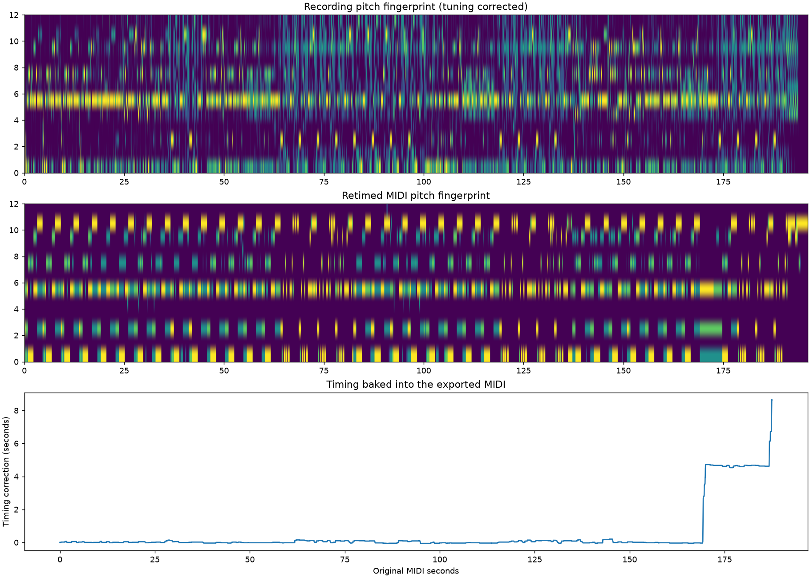

Offline pitch + attack fingerprint alignment, 10 ms feature grid. Timing is baked into aligned.mid; Unity must use an identity time map.
Pitch similarity: linear 41.6% → aligned 60.4%. MIDI export timing error ≤ 0.214 ms. This export error measures encoding fidelity, not musical alignment accuracy.
Not certified perfect. Missing/extra notes, performance differences and repeated harmony remain ambiguous. Suggested pitch-class shift: 0; pitches were preserved. Inspect the weak windows and use matching cues with --anchors to rerun offline.

Left: recording. Right: retimed note attacks. This preview is for checking alignment only; Unity plays the recording alone.
Tempo regularization merged 27 extreme fingerprint knots; maximum map adjustment 2.129s. Review these automatic matches before relying on precise timing.